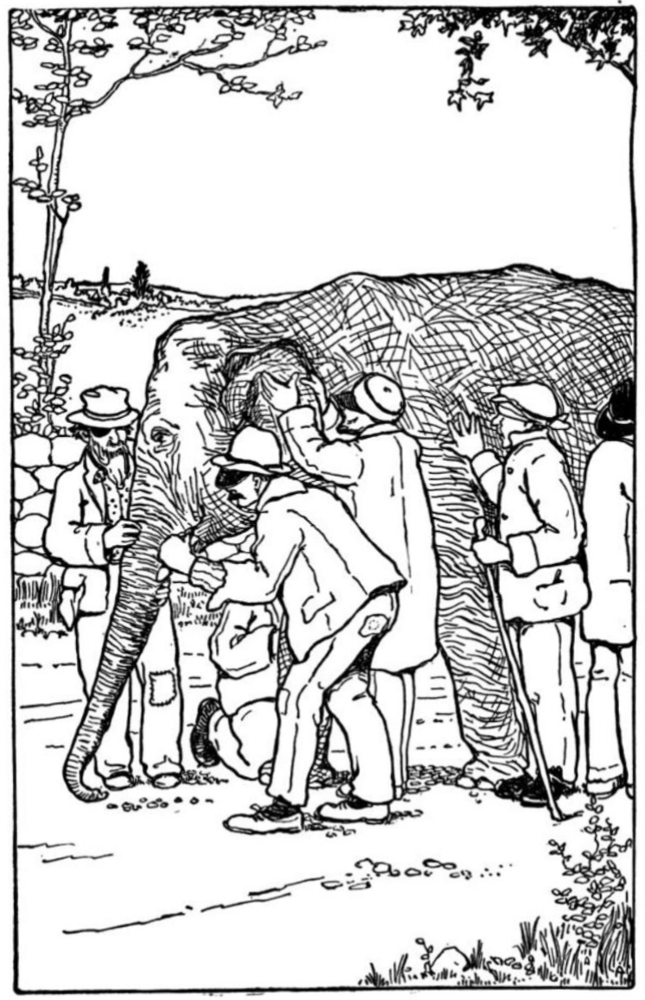

Prototyping open econ tools
Over the past couple of years, I’ve been building up a loose ‘regional economics’ toolkit while digging into UK sectors, growth and other econ-adjacent data (working mainly with SYMCA wearing my Y-PERN hat)1.
I’m gathering data/code/explanations onto a regecontools website, though bits are spread all over. This live outputs page on the techie blog has gathered most of it in one place. (Fun2 example interactive: South Yorkshire’s job count from 2023 BRES data; click to drill down through local authority and sector granularity.)
Over the next six months or so, I want to make this a more focused project. The plan is roughly this:
- Using open data/methods, test and improve these tools (and prototype new ones) so they’re as useful as they can be
- Dig deeper into the ideas and questions we’re pursuing - iterate between these and the tools.
- Build on existing relationships and search out new ones to refine the tools/ideas/questions cycle.
- Help build capacity through things like this ONS Local session I ran introducing R for regional economic analysis (video here; the online slides here work as a how-to guide, including how to use R easily in a browser).
The least tested part of this for me, and maybe the most interesting, is the ‘tools/ideas/questions’ cycle. The tools/concepts we use to make sense of our regional economies have grown from a hodgepodge of ideas. These can be questioned at different levels - from narrowly methodological (“Do existing measures of public sector output capture their real value? Have we understood what impact boundary choice has?”) through to deeper, more political ideas about what economies are and what/who they’re for (see e.g. the latest doughnut economics Nature paper or this survey of over 200 eco-econs/wellbeing indicators).
Y-PERN’s whole purpose has been to experiment with breaking down barriers in this cycle - trying to push past deficit model thinking that just sees that cycle as a “transfer of information from experts to non-experts”. This is still a pretty entrenched view: academics toil in the dark for years, emerge pale and blinking, clutching new insights. A separate ‘knowledge exchange’ process then commences.
But that doesn’t align with the reality of data-driven policymaking: everyone involved are experts in what they do. It’s a deeply collaborative endeavour. We don’t all share the same knowledge, but we also won’t progress much without bringing everyone’s together.
The ‘open’ part of the toolkit is in symbiosis with the ‘ideas/questions’ part. Regions face many of the same economic questions, including identical asks from central government (e.g. to produce Local Growth Plans). The same data sources are re-used, the same assumptions. At the same time, we’re all working to develop our own identities as devolution deepens. Given that, here’s the philosophy I want to work with:
Do data work openly where we can. It will support collaboration and learning. It will help build a shared sense of ground truth. It will avoid wheel reinvention.
I don’t have a dogmatic fealty to open source — we have a data/analysis mixed economy where private providers can do things other can’t, and that’s a good thing. There are also essential datasets that can’t be open, for good reason. But where we can, working in the open just goes better with the grain of those three things: (1) collaborative learning/capacity building across silos; (2) developing our shared sense of ground truth; (3) avoiding wheel reinvention (a facet of reproducibility, which needs open methods; you can’t reproduce something if you can’t access it).
The only way this works is if we prototype. Or call that test and learn if you prefer. As that doc says:
At its simplest [it] involves (1) developing something; (2) making contact with reality; (3) learning from the results.
Sounds great in principle - but we have to be open to our preconceptions being challenged when we smack into reality. The Valve Games employee manual puts it like this3:
“—–ing up is a great way to find out that your assumptions were wrong or that your model of the world was a little bit off. As long as you update your model and move forward with a better picture, you’re doing it right. Look for ways to test your beliefs. Never be afraid to run an experiment or to collect more data.”
While not always comfortable, this is part of how to grow our shared sense of ground truth by working together. It’s perfect ‘blind people and elephant’ parable territory4. Brace for an extremely mixed elephant/economy metaphor.
- We want to see as much of the elephant as we can. How is the economy structured, what’s growing, shrinking, changing? Why? (And a whole bag of less narrow questions, of course.)
- Those lead naturally to “What data/methods do we have to answer these questions?” Any one data source helps us grab a single pachyderm part. Multiple sources give us a grip on different bits, but the whole beast still eludes us. We need enough knowledge to know our tools’ limitations - we will regularly hit the streetlight effect, mistaking the data for the whole animal5.
Combining openness and prototyping, though, we can exchange what we think we’ve seen with others, maybe learn from our errors, and move a step or two closer to a collective sense of shape.
Then there are awkward people saying things like, “Are we sure this is an elephant? I think maybe we have to go back to first principles here.” But again - an open, testing approach lets us argue our competing pachyderm theories out, and often discover diverse tools can be used in different places very effectively despite no total agreement.
That can hit up against very different incentives and cadences across academia and policymaking (as SYMCA’s Alice Rubbra lays out here really clearly) - but those are other elements to test as we go. What mix of relationships and structures can we grow to get closer to truly learning, adaptive regions?
So, what next? I’ll need to keep things fairly narrow to achieve anything at all, most likely by testing some ONS and Companies-House-extracted economy measures, see what can be improved, what blind spots there are. I’ll also try to find two or three focused problems to apply this to - including, I’m hoping, something on how we close the gap between quant views of sector mix and ground level knowledge of how firms interact, and what difference that makes to their success.
Underlying-idea-wise, I’d like to see how older theories of technical changes in production can help shed light on current AI fears (I’m also working on an AI impact project). That could help think through where we want economic progress to come from.
Let’s see how contact with reality changes things. Stick your email in the subscribe box to follow along…

Footnotes
Github commit of this doc with cuttings at the bottom.↩︎
If you find this kind of thing entertaining…↩︎
Not an endorsement of Valve’s supposedly desk-on-wheels culture or anything similar. As this article explores, structures like this (including some co-ops without explicit rules) can often just obscure hidden hierarchies, making them harder to navigate or challenge.↩︎
Krugman: “We just don’t see what we can’t formalise”. [citation forgotten!]↩︎